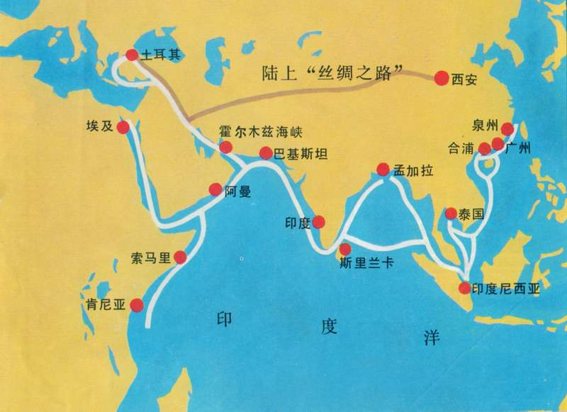
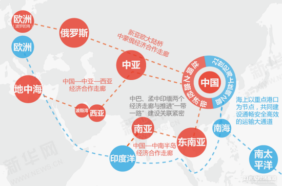
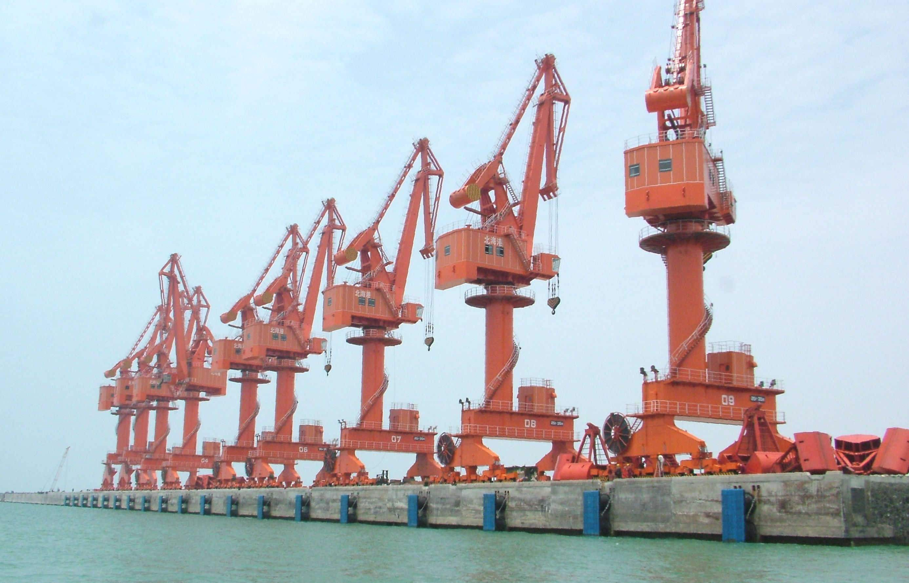
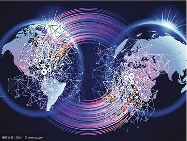
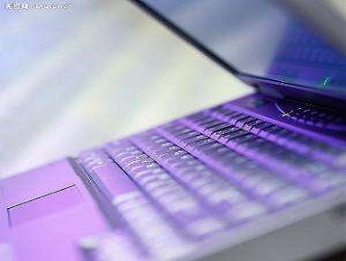

古代一带一路
丝绸之路是起始于古代中国，连接亚洲、非洲和欧洲的古代陆上商业贸易路线，最初的作用是运输古代中国出产的丝绸、瓷器等商品，后来成为东方与西方之间在经济、政治、文化等诸多方面进行交流的主要道路。丝绸之路从运输方式上，主要分为陆上丝绸之路和海上丝绸之路。陆上丝绸之路，是指西汉（前202年—8年）汉武帝派张骞出使西域开辟的以首都长安（今西安）为起点，东汉时以都城洛阳（今河南洛阳）为起点，经凉州、酒泉、瓜州、敦煌、中亚国家、阿富汗、伊朗、伊拉克、叙利亚等而达地中海，以罗马为终点，全长6440公里。这条路被认为是连结亚欧大陆的古代东西方文明的交汇之路，而丝绸则是最具代表性的货物。海上丝绸之路，是指古代中国与世界其他地区进行经济文化交流交往的海上通道。2000多年前，一条以中国徐闻港、合浦港等港口为起点的海上丝绸之路成就了世界性的贸易网络。唐代，我国东南沿海有一条叫作“广州通海夷道”的海上航路，这便是我国海上丝绸之路的最早叫法。

21世纪一带一路

“一带一路”（英文：The Belt and Road，缩写B&R）是“丝绸之路经济带”和“21世纪海上丝绸之路”的简称。它将充分依靠中国与有关国家既有的双多边机制，借助既有的、行之有效的区域合作平台，一带一路旨在借用古代丝绸之路的历史符号，高举和平发展的旗帜，积极发展与沿线国家的经济合作伙伴关系，共同打造政治互信、经济融合、文化包容的利益共同体、命运共同体和责任共同体。2015年3月28日，国家发展改革委、外交部、商务部联合发布了《推动共建丝绸之路经济带和21世纪海上丝绸之路的愿景与行动》。“一带一路"经济区开放后，承包工程项目突破3000个。2015年，我国企业共对“一带一路”相关的49个国家进行了直接投资，投资额同比增长18.2%。2015年，我国承接“一带一路”相关国家服务外包合同金额178.3亿美元，执行金额121.5亿美元，同比分别增长42.6%和23.45%。2016年6月底，中欧班列累计开行1881列，其中回程502列，实现进出口贸易总额170亿美元。2016年6月起，中欧班列穿上了统一的“制服”，深蓝色的集装箱格外醒目，品牌标志以红、黑为主色调，以奔驰的列车和飘扬的丝绸为造型，成为丝绸之路经济带蓬勃发展的最好代言与象征。
海带明珠
公园前111年，汉朝平定南越，开始拥有直接通往南海诸国的海上通道。据《汉书·地理志》记载，汉武帝派使者从广西合浦等港口前往南海地区，最远到达今天的斯里兰卡，进行官方贸易。由中国航向西方的海上航线，与由地中海、红海、印度洋航向东方的海上航线在斯里兰卡正式交汇，构成贯通东西方世界的“海上丝绸之路”。因此，广西是古代“海上丝绸之路”的发源地之一。2015年，“一带一路”成为我国区域发展的首要战略。在全国两会期间，习近平总书记在参加广西代表团审议时明确指出：‘一带一路’战略规划对广西的定位，是发挥广西与东盟国家陆海相连的独特优势，加快北部湾经济区和珠江－西江经济带开放开发，构建面向东盟的国际大通道，打造西南中南地区开放发展新的战略支点，形成21世纪海上丝绸之路和丝绸之路经济带有机衔接的重要门户。广西一头连着21 世纪海上丝绸之路，一头连着丝绸之路经济带，处于“一带一路”的结合部、交汇点，有条件成为“一带一路”有机衔接的重要门户。广西与东盟国家海陆相连，是面向东盟的国际大通道。广西通过昆明、贵阳、成都、重庆，或通过长沙、武汉、郑州，延伸到兰州、西安与欧亚大陆桥贯通，从而与丝绸之路经济带主要节点连接起来，成为西南中南地区开放发展新的战略支点。

IT产业
IT产业，又称信息产业，它是运用信息手段和技术，收集、整理、储存、传递信息情报，提供信息服务，并提供相应的信息手段、信息技术等服务的产业。
-
传感技术
是关于从自然信源获取信息，并对之进行处理和识别的一门多学科交叉的现代科学与工程技术。
-

通信技术
是指将信息从一个地点传送到另一个地点所采取的方法和措施。
-

计算机技术
用强大的计算机能力，对系统进行定量计算和分析，为解决复杂系统问题提供手段和工具。
{kind=link}
{kind=link}
{kind=link}
{kind=link}
{kind=link}
{kind=link}